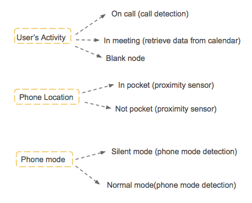

Activo motivates sedentary office workers to exercise. The application is sensitive and responsive to the situations and environment of the user. It detects their movements through the phone's built-in accelerometer. When the application recognizes that the user is sitting for more than 30 minutes, a notification is sent with a specific workout to do.

Domain Model
The three different types of context: User's Activity, Phone Location, Phone Mode. The input and output modalities vary depending on which situation the user is currently at. The input modalities are speech and gesture while the output modalities are vibration, sound, text, and image.